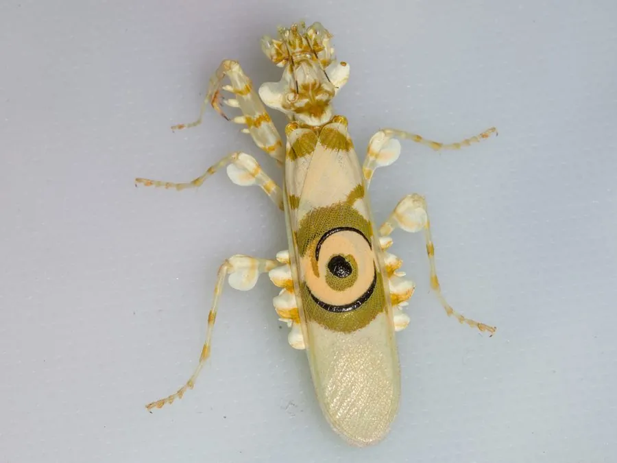

昆虫 · 动物界
刺花螳 Pseudocreobotra wahlbergii

体色白绿相间、前翅有醒目螺旋眼斑的小型螳螂，常停在花间伏击传粉昆虫，受惊时展开前翅露出眼斑吓退天敌。
- 分类
- 门节肢动物门纲昆虫纲目螳螂目科花螳科属刺花螳属
- 栖息环境
- 非洲东部和南部的草原、灌丛和花丛
- 地理分布
- 非洲东部和南部
- 保护级别
- 暂无评估
物种志
刺花螳成虫体长约 30–40 mm，雌虫略大。体色以白色和绿色为主，腹部有橙红色和绿色的横带，前翅中央各有一个醒目的螺旋状眼斑，边缘镶黄绿色；前胸背板两侧有细小的刺状突起。
刺花螳分布于非洲东部和南部的草原与灌丛，常停在花丛和嫩枝上伏击蜜蜂、蝴蝶等传粉昆虫。它的体色会随蜕皮和环境变化，从白色到粉绿不等，与所停歇的花朵颜色相近。受惊时，它会抬起前足、展开前翅，露出翅上的螺旋眼斑，同时发出嘶声，以此吓退鸟类和蜥蜴。雌虫把卵鞘固定在枝条上，卵鞘呈褐色。刺花螳因色彩鲜艳、行为有趣而成为受欢迎的宠物螳螂，野生种群暂无明显的威胁。
形态与习性
- 食性伏击蜜蜂、蝴蝶等传粉昆虫
- 体长30–40 mm
- 眼斑前翅各有一个螺旋状眼斑
- 体色白绿相间，随蜕皮和环境变化
- 防御展开前翅露出眼斑并发出嘶声
- 繁殖卵鞘固定在枝条上，呈褐色
趣味知识
- 刺花螳前翅上的螺旋眼斑在受惊时会突然展开，像两只大眼睛。
- 它常停在花上，体色与花朵接近，传粉昆虫很难察觉。
- 这种螳螂在非洲的草原上很常见，也常被作为宠物饲养。